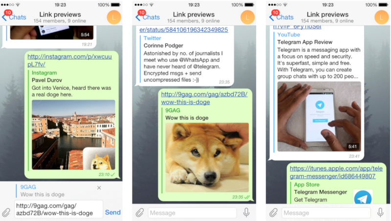

首頁 >
官方新聞 > 連結預覽（原文）（最新手機版中文化檔案）
連結預覽（Link Previews）
除了新的安全功能，今天的更新為您帶來我們第一個含有「豐富的連結摘要」之版本。現在，所有 Twitter，Instagram照片 和 YouTube影片 的連結將會被精美的呈現，這樣您將會在開啟連結之前，看到這個連結的內容是什麼。
一旦您貼上URL到訊息輸入欄，Telegram 將開始分析該連結，並取到一個該連結的預覽。如果你寧可傳送沒有預覽的特定訊息，只需輕按英文字母 " x " 將其刪除。

我們首先展示最受歡迎服務的連結預覽，其他URL類型（文章，部落格文章等）的連結預覽將在本月晚些時候來到Telegram。我們將使用一些伺服器端的戲法漸漸地推出它們，而不需要額外的應用程式更新。
在此期間，請盡量玩得開心地連結到 Twitter，YouTube，Instagram，Facebook，9gag和其他幾個廣受歡迎的服務。謝謝！
2015年4月8日
電報團隊